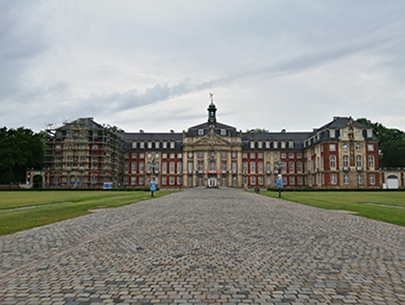
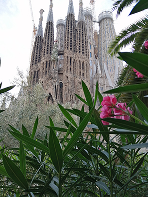

In questa foto, invece, è raffigurata Muenster, la città in cui ho vissuto due anni.
Una delle esperienze più belle in assoluto.
Una esperienza molto importante anche perché è stata la mia prima esperienza all’estero.

La città rappresentata nella terza foto è Barcellona, in foto la Sagrada Familia.
Attualmente vivo in questa meravigliosa città che ha tanto da offrire.